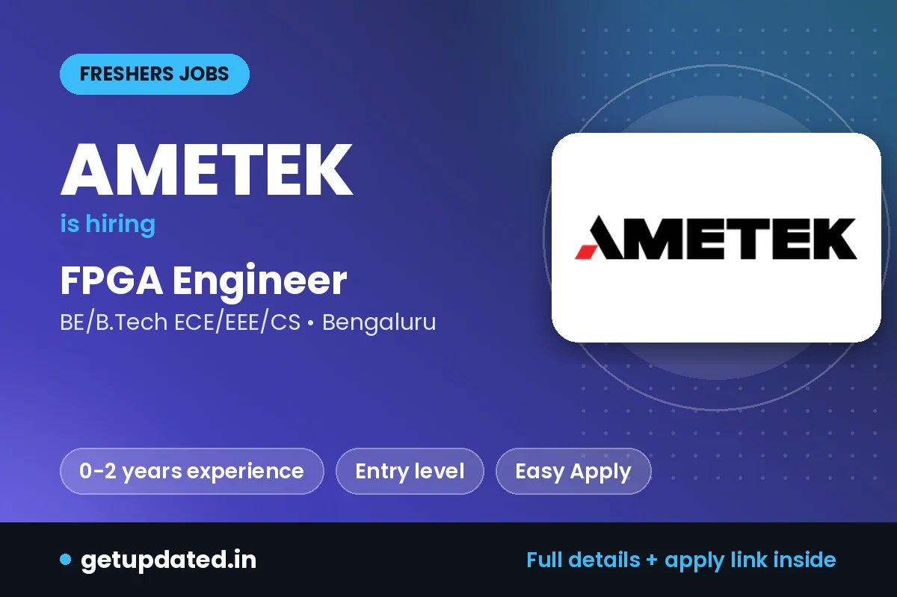

The Centre for Airborne Systems (CABS), a DRDO establishment in Bengaluru, has invited Indian nationals for Junior Research Fellow (JRF) positions across five engineering disciplines. Selection is through walk-in interviews on 28 and 29 January 2027, and candidates must email their willingness by 24 January 2027.
For engineering graduates, this is a rare chance to start a research career inside India's defence ecosystem. The fellowship pays Rs 37,000 per month plus HRA as admissible, and the work is linked to the indigenous Airborne Early Warning and Control programme. No prior work experience is asked for, so fresh B.E/B.Tech and M.E/M.Tech graduates can apply.
This guide covers eligibility, the walk-in schedule, salary, how to apply, and a preparation plan. Read the official notification (Advt. No. CABS/JRF/2027/01) before you travel.
Table of Contents
- Quick Highlights
- About CABS DRDO
- Role Overview: What a JRF Does
- Disciplines and Walk-in Schedule
- Eligibility Criteria
- Salary and Benefits
- Important Dates
- Application Fee and Selection Process
- How to Apply
- Preparation Plan
- Likely Interview Topics by Discipline
- Common Mistakes to Avoid
- Official Links and Final Checklist
- Final Takeaway
- Also Read
- FAQs
Quick Highlights
| Particular | Details |
|---|---|
| Organisation | Centre for Airborne Systems (CABS), DRDO, Ministry of Defence |
| Advertisement No. | CABS/JRF/2027/01 |
| Post | Junior Research Fellow (JRF) |
| Disciplines | Aeronautical, Computer Science & Engineering, ECE, Electrical, Mechanical |
| Qualification | BE/B.Tech with valid GATE score, or ME/M.Tech, first division |
| Pay | Rs 37,000 per month plus HRA as admissible |
| Maximum age | 28 years as on 31 December 2026 |
| Location | CABS, Belur, Yemlur PO, Bengaluru-560037 |
| Last date (email willingness) | 24 January 2027 |
| Walk-in dates | 28 and 29 January 2027, by discipline |
Mark the dates
Willingness by email must reach CABS by 24 January 2027. Reporting on the interview day is by 08:45 hrs, and late candidates are not allowed to participate.
About CABS DRDO
The Centre for Airborne Systems is one of DRDO's premier research establishments, based in Bengaluru. The notice says CABS is involved in the indigenous Airborne Early Warning and Control Programme through the Airborne Surveillance Platform (ASP). Such platforms combine radar, sensors, communication, mission computing and aircraft integration.
CABS is looking for young and meritorious candidates who want to pursue defence-related research. That is why the five disciplines span aeronautics, software, electronics, electrical systems and mechanical engineering. Defence R&D needs all of these working together.
Role Overview: What a JRF Does
A Junior Research Fellow is an entry-level research position. You work with scientists in the laboratory on projects, and you learn how real defence systems are designed, tested and improved. The notice names the place of fellowship as CABS, Belur, Yemlur PO, Bengaluru.
For a fresher this is valuable exposure. You work on large, mission-critical technology, and you build a research profile. The role can also support later higher studies or a research career. Exact project assignments are decided by CABS, and the notice does not list them.
Disciplines and Walk-in Schedule
Candidates are called on different days depending on their discipline. Check your date carefully.
| Post Code | Discipline | Walk-in Date |
|---|---|---|
| JRF 01 | Aeronautical Engineering | 29 January 2027 |
| JRF 02 | Computer Science & Engineering | 29 January 2027 |
| JRF 03 | Electronics & Communication Engineering (ECE) | 28 January 2027 |
| JRF 04 | Electrical Engineering | 28 January 2027 |
| JRF 05 | Mechanical Engineering | 29 January 2027 |
The notice does not print a category-wise break-up of vacancies. It also says the number of vacancies may change as per organisational requirement.
Equivalent branches accepted
The notice lists equivalent subject names for each discipline. For Aeronautical, it accepts Aeronautical Engineering, Aerospace Engineering and Aerospace Engineering (Avionics). For Computer Science, it accepts a wide range, including Computer Science Engineering/Technology, Information Technology, Information Science & Engineering, Software Engineering, and Computer & Communication Engineering. For ECE, it accepts Electronics & Communication, Electronics Engineering, Electronics & Instrumentation, Electronics & Telecommunication, and several related names. Check the full equivalence lists for ECE, Electrical and Mechanical in the official PDF, because the exact accepted names matter.

Eligibility Criteria
Educational qualification (all posts)
- BE/B.Tech in the above disciplines in first division, with a valid GATE score. Only GATE 2025 and GATE 2026 scores are acceptable.
- OR ME/M.Tech in the above disciplines in first division, both at graduate and post-graduate level.
Age limit
- Upper age limit is 28 years as on 31 December 2026.
- Relaxation is 5 years for SC/ST and 3 years for OBC (Non-creamy Layer) candidates.
- Candidates claiming relaxation must enclose a caste certificate copy with the application.
Nationality
Only Indian nationals can apply.
Check your GATE year
Older GATE scores are not accepted for the B.E/B.Tech route. If your score is from before 2025, you do not meet the condition. M.E/M.Tech candidates follow the separate route, which needs first division at both levels.
Salary and Benefits
All five posts carry monthly emoluments of Rs 37,000 per month plus House Rent Allowance (HRA) as admissible. Since the posting is in Bengaluru, a city with high rents, the HRA component helps. The notice does not describe other benefits, so do not assume any beyond what is printed.
Important Dates
| Event | Date |
|---|---|
| Last date to email willingness | 24 January 2027 |
| Walk-in: ECE and Electrical | 28 January 2027 |
| Walk-in: Aeronautical, CSE and Mechanical | 29 January 2027 |
| Reporting time | By 08:45 hrs |
| Application acceptance at venue | 0900 hrs to 1000 hrs |
Application Fee and Selection Process
The official notification does not specify an application fee. Do not pay anyone claiming to process an application for CABS.
Selection is through a walk-in interview at CABS. The notice does not describe the interview in detail, such as written tests or weightage. Expect a technical interview where your qualification, GATE score, academic record and subject knowledge are checked. Treat any further detail as unconfirmed until you read the official PDF.
How to Apply
- Download the official notification PDF and read it fully, including the discipline-wise equivalence lists.
- Download the application form from www.drdo.gov.in. The form is also printed in the notice.
- Fill in the form carefully. Attach a caste certificate copy if you claim age relaxation.
- Email your willingness to the address given in the notification, latest by 24 January 2027. Use the subject line: "Application for the post of Junior Research Fellowship- Discipline" (replace "Discipline" with your branch).
- Keep the form and your original documents ready.
- Report at CABS, DRDO, Belur, Yemlur PO, Bengaluru-560037 on your discipline's date, by 08:45 hrs. Applications are accepted from 0900 to 1000 hrs.
- For queries, call 080-25049393/9138/9135 on working days (Monday to Friday), 1400 to 1600 hrs.
Do not wait for the last day
Email your willingness well before 24 January. A mail sent at the last minute can fail because of a typing error in the address or subject line, and you will not have time to fix it.

Preparation Plan
You have a little under two months from today (28 November 2026), which is enough time if you start now.
- Revise core fundamentals of your branch. Research interviews usually probe basics more than tricks.
- Go through your final-year project and B.Tech or M.Tech thesis. Be ready to explain the problem, method, results and what you would improve.
- Brush up GATE topics for your discipline, since your GATE score may be discussed.
- Read about airborne early warning systems, radar basics and sensor integration. Even a short overview shows interest in CABS's work.
- Prepare a short self-introduction that covers your degree, branch, score, projects and why defence research.
Likely Interview Topics by Discipline
These are suggested areas based on the discipline, not an official syllabus.
- CSE: data structures, algorithms, operating systems, computer networks, databases, and programming in C/C++ or Python.
- ECE: signals and systems, communication, digital and analog electronics, microprocessors, antennas and RF basics.
- Electrical: circuits, machines, power electronics, control systems and power systems.
- Mechanical: thermodynamics, fluid mechanics, strength of materials, machine design and manufacturing.
- Aeronautical: aerodynamics, aircraft structures, propulsion and flight mechanics.
Common Mistakes to Avoid
- Arriving after the reporting time. The notice states late candidates will not be allowed to participate.
- Turning up on the wrong day. ECE and Electrical are on 28 January, while the other three disciplines are on 29 January.
- Using a GATE score older than 2025 for the B.E/B.Tech route.
- Forgetting the caste certificate when claiming age relaxation.
- Using a different email subject line from the one in the notice.
- Missing original documents or marksheets that prove first division.
Official Links and Final Checklist
Before you leave for Bengaluru, confirm each item:
- Willingness mail sent by 24 January 2027, with the correct subject line
- Filled application form, with printouts
- Marksheets showing first division, and a valid GATE scorecard (2025 or 2026) if applying via B.E/B.Tech
- Caste certificate if claiming relaxation
- Photo ID and proof of age
- Knowledge of your discipline's date and the 08:45 hrs reporting time
Final Takeaway
CABS DRDO's JRF walk-in is a genuine fresher opportunity: Rs 37,000 plus HRA, a Bengaluru posting, and defence research exposure.
If you hold a first-division B.E/B.Tech with GATE 2025/2026, or an M.E/M.Tech, in one of the five disciplines, start preparing now and send your willingness mail early. Read the full official PDF before you go, since it is the final authority on every detail.
Also Read

BEL Trainee Engineer Recruitment 2026: Apply Online for Panchkula Unit (Electronics, Mechanical, Electrical)
Read now →
Nubra DevOps Intern Hiring 2026: Bengaluru On-site Internship, Skills and How to Apply
Read now →
AMETEK Hiring FPGA Engineer in Bengaluru 2026: BE/B.Tech Freshers (0-2 Years) Can Apply
Read now →
Infineon Young Graduate Trainee Hiring 2026: SVT Engineer (Wi-Fi Validation) in Bengaluru
Read now →Browse all latest jobs & updates →
FAQs
1. What is the last date to send willingness for CABS DRDO JRF 2027?
Willingness must reach CABS by email latest by 24 January 2027. Use the email address and subject line given in the official notification.
2. When are the CABS JRF walk-in interviews?
Interviews are on 28 January 2027 for Electronics & Communication and Electrical Engineering, and on 29 January 2027 for Aeronautical, Computer Science and Mechanical Engineering.
3. What is the salary of a DRDO CABS JRF?
The notice offers Rs 37,000 per month plus House Rent Allowance (HRA) as admissible for all disciplines.
4. What is the age limit?
The maximum age is 28 years as on 31 December 2026. SC/ST candidates get 5 years relaxation and OBC (Non-creamy Layer) candidates get 3 years.
5. Is a GATE score compulsory?
BE/B.Tech candidates need a valid GATE score, and only GATE 2025 and GATE 2026 scores are accepted. ME/M.Tech candidates are eligible under the alternate qualification route.
6. Is there an application fee?
The official notification does not specify any application fee.
7. Where is the interview held?
At CABS, DRDO, Belur, Yemlur PO, Bengaluru-560037. Candidates must report by 08:45 hrs, and late arrivals are not allowed.